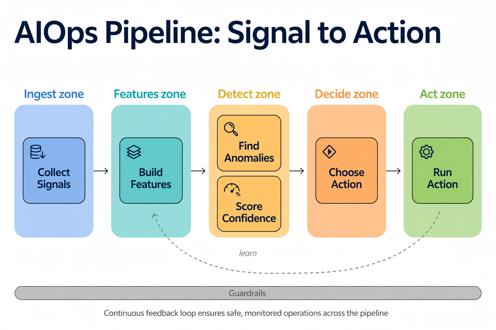
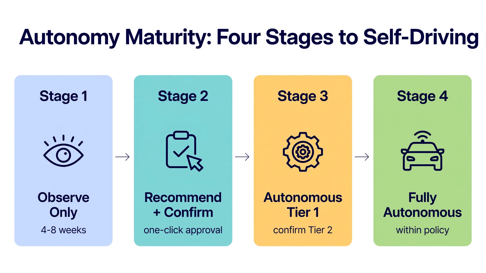

Chapter 27: Building Autonomous Pipelines with AIOps
AIOps — the application of machine learning, event correlation, and automated response to IT operations — reaches its full potential when applied to database pipelines that can observe their own state, reason about anomalies, and execute remediation without waiting for a human to open a ticket. For SQL Server environments, this means replacing reactive runbooks with closed-loop systems: pipelines that ingest telemetry at high frequency, correlate signals across storage, compute, query execution, and replication layers, and issue corrective actions measured in seconds rather than hours. This chapter covers the architecture and implementation of those pipelines — from signal ingestion and ML-based anomaly detection through to autonomous action orchestration, audit trails, and the guardrails that prevent autonomous systems from making catastrophic decisions.
27.1 The AIOps Pipeline Architecture: From Signal to Action

Read it left to right. The blue Ingest zone collects raw telemetry. The teal Features zone turns those signals into model-ready features, which is where most AIOps projects actually succeed or fail. The amber Detect zone finds anomalies and, critically, scores its own confidence — a detection without a confidence score is just another alert. The orange Decide zone picks the action; the green Act zone executes it. Two things run underneath and around everything: the gray Guardrails bar constrains every stage (no stage operates outside policy), and the dashed learn loop feeds outcomes back into feature engineering. The key insight: the pipeline's intelligence compounds through the learn loop — the tenth incident is handled better than the first because the features got smarter, not because someone tuned a threshold.
Every autonomous database pipeline follows the same fundamental shape: collect → correlate → classify → decide → act → audit. What separates an AIOps pipeline from a conventional monitoring stack is the presence of closed-loop feedback at every stage and the absence of a required human approval step for a defined class of decisions.
The components in a production-grade pipeline:
sql_exporter), SQL Agent jobs, extended events sessions, custom scrapersThe key architectural property is asynchrony with bounded latency. Each stage operates independently on a queue, which means a slow anomaly classification does not block telemetry collection. However, the end-to-end latency from signal detection to action execution must be bounded — typically under 90 seconds for P1-class events, under 10 minutes for P2-class events.
Telemetry Sources
│
▼
[Kafka / Prometheus] ──► [Feature Engineering] ──► [Anomaly Classifier]
│
┌────────────┴────────────┐
▼ ▼
[Rules Engine] [LLM Planner]
│ │
└────────────┬────────────┘
▼
[Action Executor]
│
┌──────┴──────┐
▼ ▼
[SQL Server]
│
▼
[Audit / Feedback]This is not a theoretical diagram — it maps directly to a Kubernetes-based deployment where each box is a separate microservice with its own scaling policy, circuit breaker, and retry budget.
27.2 Telemetry Ingestion and Feature Engineering at Scale
Raw metrics are not features. A spike in lock wait time from sys.dm_exec_requests means nothing in isolation; the same signal correlated with a deployment timestamp and an unusual execution_count rate on a specific query hash means something actionable. Feature engineering is the step that transforms raw time-series into inputs that a classifier can act on.
Telemetry collection begins at the database layer. For SQL Server, sql_exporter with custom collector YAML files, or a Python-based agent querying DMVs (sys.dm_exec_query_stats, sys.dm_os_wait_stats, sys.dm_tran_locks, sys.dm_hadr_database_replica_states), covers the required surface area.
Core DMV telemetry for the feature pipeline:
-- Collect per-plan query statistics for feature engineering
SELECT TOP 500
qs.query_hash,
SUBSTRING(qt.text, (qs.statement_start_offset / 2) + 1,
((CASE qs.statement_end_offset
WHEN -1 THEN DATALENGTH(qt.text)
ELSE qs.statement_end_offset
END - qs.statement_start_offset) / 2) + 1) AS query_sample,
qs.execution_count,
qs.total_elapsed_time / NULLIF(qs.execution_count, 0) AS avg_elapsed_us,
qs.total_worker_time / NULLIF(qs.execution_count, 0) AS avg_cpu_us,
qs.total_logical_reads / NULLIF(qs.execution_count, 0) AS avg_logical_reads,
qs.total_spills / NULLIF(qs.execution_count, 0) AS avg_spills,
qs.total_rows / NULLIF(qs.execution_count, 0) AS avg_rows,
GETUTCDATE() AS collected_at
FROM sys.dm_exec_query_stats qs
CROSS APPLY sys.dm_exec_sql_text(qs.sql_handle) qt
ORDER BY qs.total_elapsed_time DESC;These queries run on a scrape interval — typically 30 seconds for production pipelines. The raw output is published to a Kafka topic (db.metrics.query_stats) and consumed by a Python-based feature engineering service.
The feature engineering service computes:
avg_exec_ms from the 7-day rolling mean for this queryid?avg_blks_read accelerating (positive second derivative)?import numpy as np
import pandas as pd
from kafka import KafkaConsumer, KafkaProducer
import json
from collections import defaultdict, deque
from scipy.spatial.distance import cosine
WINDOW_SIZE = 288 # 288 × 30s = ~2.4 hours of rolling history per query
class QueryFeatureEngineer:
def __init__(self, kafka_bootstrap: str):
self.consumer = KafkaConsumer(
"db.metrics.query_stats",
bootstrap_servers=kafka_bootstrap,
value_deserializer=lambda m: json.loads(m.decode("utf-8")),
group_id="feature-engineer-v2",
auto_offset_reset="latest",
)
self.producer = KafkaProducer(
bootstrap_servers=kafka_bootstrap,
value_serializer=lambda m: json.dumps(m).encode("utf-8"),
)
# Rolling window keyed by (db_host, queryid)
self.history: dict[tuple, deque] = defaultdict(lambda: deque(maxlen=WINDOW_SIZE))
def compute_features(self, record: dict) -> dict:
key = (record["db_host"], record["queryid"])
window = self.history[key]
window.append(record)
if len(window) < 10:
return None # insufficient history
hist_exec = [r["avg_exec_ms"] for r in window]
hist_reads = [r["avg_blks_read"] for r in window if r.get("avg_blks_read")]
current_exec = record["avg_exec_ms"]
mean_exec = np.mean(hist_exec[:-1])
std_exec = np.std(hist_exec[:-1]) or 1.0
z_score = (current_exec - mean_exec) / std_exec
# Rate of change (last 3 samples)
if len(hist_reads) >= 3:
roc_reads = (hist_reads[-1] - hist_reads[-3]) / 2.0
else:
roc_reads = 0.0
return {
"db_host": record["db_host"],
"queryid": record["queryid"],
"query_sample": record["query_sample"],
"avg_exec_ms": current_exec,
"z_score_exec": round(z_score, 4),
"roc_blks_read": round(roc_reads, 4),
"miss_ratio": record.get("miss_ratio", 0.0),
"avg_temp_blks": record.get("avg_temp_blks", 0.0),
"calls": record.get("calls", 0),
"collected_at": record["collected_at"],
}
def run(self):
for message in self.consumer:
record = message.value
features = self.compute_features(record)
if features:
self.producer.send("db.features.query_stats", value=features)This service runs as a Kubernetes Deployment with three replicas, using Kafka consumer group semantics to partition work by db_host. The output topic db.features.query_stats is consumed by the anomaly detection layer.
27.3 ML-Based Anomaly Detection and Confidence Scoring
Feature vectors alone don't drive action. The anomaly detection layer must answer: is this signal genuinely abnormal, or is it within the expected variance for this query's workload profile? And critically, it must express that answer as a confidence-weighted score that downstream decision logic can threshold against.
Two complementary approaches work well in production:
Isolation Forest for unsupervised detection of multidimensional anomalies — no labeled training data required, retrains nightly on the prior 7 days of feature vectors. This handles unknown-unknown failure modes.
Threshold ensemble with exponential backoff for well-known patterns — blocking locks, replication lag exceeding SLA, log file growth rate anomalies. These rules are deterministic and have near-zero false-positive rates when tuned correctly.
The combination means: isolation forest catches the unexpected; rule ensemble catches the known-bad with high precision.
from sklearn.ensemble import IsolationForest
from sklearn.preprocessing import StandardScaler
import joblib
import numpy as np
import json
from kafka import KafkaConsumer, KafkaProducer
from datetime import datetime, timezone
FEATURE_COLS = [
"z_score_exec", "roc_blks_read", "miss_ratio",
"avg_temp_blks", "avg_exec_ms"
]
class AnomalyDetector:
def __init__(self, model_path: str, kafka_bootstrap: str):
self.model: IsolationForest = joblib.load(f"{model_path}/iso_forest.pkl")
self.scaler: StandardScaler = joblib.load(f"{model_path}/scaler.pkl")
self.consumer = KafkaConsumer(
"db.features.query_stats",
bootstrap_servers=kafka_bootstrap,
value_deserializer=lambda m: json.loads(m.decode("utf-8")),
group_id="anomaly-detector-v3",
)
self.producer = KafkaProducer(
bootstrap_servers=kafka_bootstrap,
value_serializer=lambda m: json.dumps(m).encode("utf-8"),
)
def score(self, feature_record: dict) -> dict:
vec = np.array([[feature_record.get(col, 0.0) for col in FEATURE_COLS]])
scaled = self.scaler.transform(vec)
# IsolationForest: score_samples returns negative anomaly score
# More negative = more anomalous. Map to [0,1] confidence.
raw_score = self.model.score_samples(scaled)[0]
# Typical range: [-0.5, 0.0]; normalize to confidence
confidence = min(1.0, max(0.0, (-raw_score - 0.05) / 0.45))
# Deterministic rule overlay
rule_triggered = (
feature_record["z_score_exec"] > 4.5 or
feature_record["miss_ratio"] > 0.85 or
feature_record["avg_temp_blks"] > 5000
)
final_confidence = max(confidence, 0.95 if rule_triggered else 0.0)
severity = (
"critical" if final_confidence > 0.85 else
"warning" if final_confidence > 0.55 else
"normal"
)
return {
**feature_record,
"anomaly_confidence": round(final_confidence, 4),
"rule_triggered": rule_triggered,
"severity": severity,
"detected_at": datetime.now(timezone.utc).isoformat(),
}
def run(self):
for message in self.consumer:
result = self.score(message.value)
if result["severity"] != "normal":
self.producer.send("db.anomalies", value=result)The anomaly records on db.anomalies carry enough context for the decision engine: which query, on which host, with what confidence, detected by which method. Nothing downstream needs to re-fetch the raw signal.
Model retraining runs as a nightly Kubernetes CronJob. It reads the prior 7 days of feature vectors from a time-series store (VictoriaMetrics or InfluxDB), fits a new IsolationForest and StandardScaler, validates that false-positive rate on a held-out validation window stays below 3%, and atomically replaces the model files at the shared path (PVC-backed or S3-backed). The running detector pods watch the model path via inotify and hot-reload without restart.
27.4 The Decision Engine: Rules, LLM Augmentation, and Safe Action Selection
Anomaly detection produces a signal. The decision engine answers: what should the system do about it? This is where AIOps pipeline design gets genuinely difficult — not in the detection, but in the action selection. A wrong action taken autonomously can be worse than no action at all.
The decision engine operates on three tiers:
Tier 1 — Deterministic rules: High-confidence, low-risk actions with well-understood outcomes. Applied immediately when confidence > 0.90 and action is on the approved list.
Tier 2 — LLM-augmented planning: Moderate-confidence events where context matters. The engine assembles a structured prompt containing the anomaly record, recent schema changes, active maintenance windows, and the last 5 similar historical events with their resolutions. An LLM (OpenAI GPT-4o or Anthropic Claude) returns a ranked action list with justification. The system executes the top-ranked action if it falls within the defined safe action envelope.
Tier 3 — Human escalation: Events where no safe autonomous action exists, or where confidence is insufficient, or where the proposed action falls outside the safe envelope. The system opens a PagerDuty incident and attaches full context — it does not block; it escalates and continues monitoring.
The safe action envelope is a critical concept. It is a statically defined list of actions the autonomous system is permitted to execute without human approval:
ALTER DATABASE SCOPED CONFIGURATION SET MAXDOP for parallelism anomalies, bounded to [1, 8]KILL spid for blocking chains > 30 secondsUPDATE STATISTICS tablename WITH FULLSCAN for stale statssp_recompile objectname for plan regressionALTER WORKLOAD GROUPActions outside the envelope require Tier 3 escalation regardless of confidence:
KILL on sessions belonging to known application service accountsThe LLM planner integration:
import openai
import json
from datetime import datetime, timezone
SAFE_ACTION_ENVELOPE = {
"alter_scoped_maxdop",
"kill_spid",
"update_statistics",
"sp_recompile",
"query_store_unforce_plan",
"resource_governor_adjust",
"ag_manual_failover",
}
SYSTEM_PROMPT = """
You are a database autonomous operations planner. Given a structured anomaly report,
recent schema changes, maintenance window status, and historical resolutions,
return a JSON object with the following structure:
{
"ranked_actions": [
{"action": "<action_name>", "parameters": {}, "justification": "<reason>", "risk": "low|medium|high"},
...
],
"reasoning_summary": "<brief explanation>"
}
Action names must be chosen from the safe action envelope provided. If no safe action
is appropriate, return action "escalate_to_human" as the only option.
"""
class LLMDecisionPlanner:
def __init__(self, openai_api_key: str):
self.client = openai.OpenAI(api_key=openai_api_key)
def plan(
self,
anomaly: dict,
recent_schema_changes: list,
maintenance_active: bool,
historical_resolutions: list,
) -> dict:
user_content = json.dumps({
"anomaly": anomaly,
"recent_schema_changes": recent_schema_changes[-5:],
"maintenance_window_active": maintenance_active,
"historical_resolutions": historical_resolutions[-5:],
"safe_action_envelope": list(SAFE_ACTION_ENVELOPE),
"current_utc": datetime.now(timezone.utc).isoformat(),
}, indent=2)
response = self.client.chat.completions.create(
model="gpt-4o",
messages=[
{"role": "system", "content": SYSTEM_PROMPT},
{"role": "user", "content": user_content},
],
response_format={"type": "json_object"},
temperature=0.1, # low temperature for deterministic planning
max_tokens=1024,
)
plan = json.loads(response.choices[0].message.content)
# Enforce safe envelope — never trust LLM output without validation
for action_item in plan.get("ranked_actions", []):
if action_item["action"] not in SAFE_ACTION_ENVELOPE | {"escalate_to_human"}:
action_item["action"] = "escalate_to_human"
action_item["justification"] = (
"Action overridden: not in safe envelope. Original: "
+ action_item.get("action", "unknown")
)
action_item["risk"] = "high"
return planThe temperature of 0.1 is intentional. LLM planners in autonomous systems should behave deterministically — you want consistent action selection for similar inputs, not creative variation. Every call to the LLM planner is logged with full input, output, and the identity of the action ultimately executed.
27.5 Action Execution, Idempotency, and Database-Side Safeguards
The action executor is the component that touches production databases. Its design must satisfy three properties: idempotency (executing the same action twice must not cause double-harm), atomicity of observation and action (the executor must re-verify the anomaly condition is still present before acting), and blast radius limitation (a single autonomous decision must never cascade into a broader outage).
Before executing any action, the executor runs a pre-flight check:
1. Re-query the database to confirm the triggering condition still exists
2. Verify no conflicting autonomous action is already in progress for this host (distributed lock via Redis or a coordination table)
3. Check the circuit breaker: if more than 3 autonomous actions have executed on this host in the last 15 minutes, halt and escalate
4. Confirm the action is not explicitly blocked by an active maintenance suppression flag
Pre-flight + safe kill for blocking chains:
-- Step 1: Confirm blocking chain still present
WITH blocking_chain AS (
SELECT
r.session_id AS blocked_spid,
r.blocking_session_id AS blocker_spid,
s.login_name AS blocker_login,
s.program_name AS blocker_program,
r.wait_time / 1000.0 AS wait_seconds,
SUBSTRING(t.text, (r.statement_start_offset / 2) + 1,
((CASE r.statement_end_offset
WHEN -1 THEN DATALENGTH(t.text)
ELSE r.statement_end_offset
END - r.statement_start_offset) / 2) + 1) AS blocker_query
FROM sys.dm_exec_requests r
JOIN sys.dm_exec_sessions s ON s.session_id = r.blocking_session_id
CROSS APPLY sys.dm_exec_sql_text(r.sql_handle) t
WHERE r.blocking_session_id > 0
AND r.wait_time / 1000.0 > 30
)
SELECT * FROM blocking_chain
ORDER BY wait_seconds DESC;
-- Step 2: Kill the blocker if still confirmed and not a system process
-- The executor checks program_name against the exclusion list before proceeding
DECLARE @spid INT = (
SELECT TOP 1 blocker_spid
FROM blocking_chain
WHERE wait_seconds > 30
AND blocker_program NOT IN ('SQL Server Replication', 'SQLAgent - Generic Refresher')
ORDER BY wait_seconds DESC
);
IF @spid IS NOT NULL
KILL @spid;The executor wraps every action in a Python context manager that writes begin/end audit records and handles partial failures:
import redis
import pyodbc
import json
import logging
from datetime import datetime, timezone
from contextlib import contextmanager
logger = logging.getLogger("action-executor")
CONN_STR = ("DRIVER={ODBC Driver 18 for SQL Server};SERVER=localhost;"
"DATABASE=aiops;UID=aiops_svc;PWD=*******;")
class ActionExecutor:
def __init__(self, redis_client: redis.Redis):
self.redis = redis_client
self.audit_conn = pyodbc.connect(CONN_STR, autocommit=True)
@contextmanager
def action_lock(self, db_host: str, action_name: str, ttl_seconds: int = 300):
lock_key = f"aiops:lock:{db_host}:{action_name}"
acquired = self.redis.set(lock_key, "1", nx=True, ex=ttl_seconds)
if not acquired:
raise RuntimeError(
f"Concurrent action lock held for {db_host}:{action_name}; skipping."
)
try:
yield
finally:
self.redis.delete(lock_key)
def check_circuit_breaker(self, db_host: str, window_minutes: int = 15, max_actions: int = 3):
cb_key = f"aiops:cb:{db_host}"
recent = self.redis.lrange(cb_key, 0, -1)
cutoff = datetime.now(timezone.utc).timestamp() - (window_minutes * 60)
recent_in_window = [
ts for ts in recent
if float(ts) > cutoff
]
if len(recent_in_window) >= max_actions:
raise RuntimeError(
f"Circuit breaker open for {db_host}: "
f"{len(recent_in_window)} actions in last {window_minutes} min."
)
def record_action(self, db_host: str, action_name: str, parameters: dict,
outcome: str, anomaly_id: str, duration_ms: float):
cb_key = f"aiops:cb:{db_host}"
self.redis.rpush(cb_key, datetime.now(timezone.utc).timestamp())
self.redis.expire(cb_key, 900)
cur = self.audit_conn.cursor()
cur.execute("""
INSERT INTO aiops_action_log
(db_host, action_name, parameters, outcome,
anomaly_id, duration_ms, executed_at)
VALUES (?, ?, ?, ?, ?, ?, SYSUTCDATETIME())
""", (
db_host,
action_name,
json.dumps(parameters),
outcome,
anomaly_id,
duration_ms,
))
def execute_kill_spid(self, db_host: str, blocker_spid: int, anomaly_id: str):
self.check_circuit_breaker(db_host)
with self.action_lock(db_host, "kill_spid"):
start = datetime.now(timezone.utc).timestamp()
try:
with pyodbc.connect(CONN_STR) as conn:
cur = conn.cursor()
# Re-verify condition before acting
cur.execute("""
SELECT r.session_id
FROM sys.dm_exec_requests r
WHERE r.session_id = ?
AND r.blocking_session_id > 0
AND r.wait_time > 25000
""", (blocker_spid,))
if cur.fetchone() is None:
logger.info("Blocker %s no longer present; skipping.", blocker_spid)
return
cur.execute(f"KILL {int(blocker_spid)}")
conn.commit()
outcome = "success"
except Exception as e:
outcome = f"error:{e}"
logger.exception("kill_spid failed for spid %s", blocker_spid)
finally:
duration_ms = (datetime.now(timezone.utc).timestamp() - start) * 1000
self.record_action(
db_host, "kill_spid",
{"blocker_spid": blocker_spid},
outcome, anomaly_id, duration_ms
)The audit table backs the feedback loop described in section 27.7:
CREATE TABLE dbo.aiops_action_log (
id BIGINT IDENTITY(1,1) PRIMARY KEY,
db_host NVARCHAR(200) NOT NULL,
action_name NVARCHAR(100) NOT NULL,
parameters NVARCHAR(MAX) NOT NULL DEFAULT '{}',
outcome NVARCHAR(200) NOT NULL, -- 'success', 'no_op', 'error:...'
anomaly_id NVARCHAR(100) NULL,
duration_ms NUMERIC(10, 2) NULL,
rollback_ddl NVARCHAR(MAX) NULL,
executed_at DATETIME2 NOT NULL DEFAULT SYSUTCDATETIME()
);
CREATE INDEX IX_aiops_action_log_host_time ON dbo.aiops_action_log (db_host, executed_at DESC);
CREATE INDEX IX_aiops_action_log_anomaly ON dbo.aiops_action_log (anomaly_id);In production this table lives in a dedicated aiops database so that audit writes never contend with production workload I/O.
27.6 Autonomous Index Management as a Pipeline Use Case
Index management is one of the highest-value autonomous pipeline use cases because the decision logic is bounded, the benefit is measurable, and the risk of a wrong action is manageable when guardrails are applied. The pipeline targets two problems: missing indexes that cause full scans on hot tables, and bloated or unused indexes that waste storage and slow writes.
Missing index detection:
-- DMV-based missing index candidates with impact score
SELECT TOP 30
ROUND(
migs.avg_total_user_cost *
migs.avg_user_impact *
(migs.user_seeks + migs.user_scans), 2
) AS improvement_score,
mid.statement AS table_name,
mid.equality_columns,
mid.inequality_columns,
mid.included_columns,
migs.user_seeks,
migs.user_scans,
migs.last_user_seek,
migs.avg_user_impact
FROM sys.dm_db_missing_index_group_stats migs
JOIN sys.dm_db_missing_index_groups mig ON mig.index_group_handle = migs.group_handle
JOIN sys.dm_db_missing_index_details mid ON mid.index_handle = mig.index_handle
WHERE migs.avg_total_user_cost * migs.avg_user_impact * (migs.user_seeks + migs.user_scans) > 1000
ORDER BY improvement_score DESC;When the pipeline identifies a candidate index, it does not create the index immediately. Instead, it:
1. Generates the CREATE INDEX ... WITH (ONLINE = ON) DDL
2. Estimates the index build duration using table size and historical build rates
3. Checks whether a maintenance window is currently active or within the next 4 hours
4. Writes the candidate to an index_candidates queue with status pending_approval if outside maintenance window, or approved if inside
5. During the maintenance window, executes approved candidates in order of impact score, with a per-host concurrency limit of 1 index build at a time
6. After build completion, monitors the query statistics for the target table for 24 hours and records whether the index was used
Online index creation with progress monitoring:
-- Executor-generated DDL
CREATE INDEX [idx_auto_{table_name}_{column_hash}]
ON [{schema_name}].[{table_name}] ({equality_columns})
INCLUDE ({included_columns})
WITH (
ONLINE = ON,
SORT_IN_TEMPDB = ON,
DATA_COMPRESSION = ROW
);
-- Post-build: confirm no disabled or suspect index state
SELECT name, is_disabled, is_hypothetical
FROM sys.indexes
WHERE object_id = OBJECT_ID('{schema_name}.{table_name}')
AND name = 'idx_auto_{table_name}_{column_hash}';Unused index retirement follows the same pipeline pattern with a stricter safety gate: an index is eligible for retirement only if it has had zero user_seeks + user_lookups + user_scans for a continuous period of 30 days across all replicas, and it is not a primary key, unique constraint, or foreign key support index. The retirement action is always DROP INDEX ... WITH (ONLINE = ON) — never a blocking drop in production.
27.7 Feedback Loops and Continuous Model Improvement
An AIOps pipeline that does not learn from its own actions degrades over time. Workloads change, query patterns evolve, new application versions alter the statistical baseline. The feedback loop is the mechanism that keeps the anomaly detector and decision engine aligned with current reality.
The feedback pipeline reads from the aiops_action_log and joins it against subsequent telemetry to determine whether each autonomous action produced the expected outcome:
Feedback analysis query:
WITH action_events AS (
SELECT
al.id AS action_id,
al.db_host,
al.anomaly_id,
al.action_name,
JSON_VALUE(al.parameters, '$.queryid') AS queryid,
al.executed_at,
al.outcome
FROM aiops_action_log al
WHERE al.action_name IN ('kill_spid', 'update_statistics', 'sp_recompile')
AND al.executed_at > DATEADD(DAY, -7, GETUTCDATE())
AND al.outcome = 'success'
),
pre_post AS (
SELECT
ae.action_id,
ae.db_host,
ae.action_name,
AVG(CASE WHEN m.collected_at < ae.executed_at
THEN m.avg_elapsed_us END) AS pre_action_avg_us,
AVG(CASE WHEN m.collected_at >= ae.executed_at
AND m.collected_at <= DATEADD(MINUTE, 30, ae.executed_at)
THEN m.avg_elapsed_us END) AS post_action_avg_us
FROM action_events ae
JOIN query_metrics_archive m
ON m.db_host = ae.db_host
AND m.queryid = ae.queryid
AND m.collected_at BETWEEN DATEADD(MINUTE, -10, ae.executed_at)
AND DATEADD(MINUTE, 30, ae.executed_at)
GROUP BY ae.action_id, ae.db_host, ae.action_name
)
SELECT
action_name,
COUNT(*) AS total_actions,
AVG(pre_action_avg_us) AS avg_pre_us,
AVG(post_action_avg_us) AS avg_post_us,
AVG((pre_action_avg_us - post_action_avg_us)
/ NULLIF(CAST(pre_action_avg_us AS FLOAT), 0) * 100) AS avg_improvement_pct,
SUM(CASE WHEN post_action_avg_us < pre_action_avg_us * 0.8
THEN 1 ELSE 0 END) AS clearly_effective,
SUM(CASE WHEN post_action_avg_us > pre_action_avg_us * 1.1
THEN 1 ELSE 0 END) AS made_things_worse
FROM pre_post
GROUP BY action_name;The feedback results feed into two downstream processes:
1. Confidence threshold calibration: If kill_spid produces improvement fewer than 60% of the time for a given anomaly pattern, the confidence threshold for triggering that action is raised from 0.85 to 0.92, reducing false-positive interventions.
2. Training data labeling: Feature vectors associated with "clearly effective" interventions are labeled as true positives; those associated with "made_things_worse" outcomes contribute to the false-positive training set. The nightly retraining job incorporates this labeled data in a semi-supervised pass after the unsupervised IsolationForest fit.
This loop prevents two common failure modes: alarm fatigue (the system fires too often on non-events, operators stop trusting it) and drift blindness (the model stops detecting real anomalies because the baseline has shifted without retraining).
27.8 Guardrails, Governance, and Audit Compliance
Autonomous systems operating on production databases must be auditable, reversible where possible, and governed by explicit policy. Without these properties, autonomous pipelines create operational risk rather than reducing it.
Immutability of the audit log is the foundation. The aiops_action_log table is protected by a trigger that prevents UPDATE and DELETE:
-- SQL Server: equivalent DDL trigger on the aiops database
CREATE TRIGGER trg_audit_log_immutable
ON aiops_action_log
AFTER UPDATE, DELETE
AS
BEGIN
RAISERROR(
'Audit log is immutable. Modifications to aiops_action_log are not permitted.',
16, 1
);
ROLLBACK TRANSACTION;
END;Policy-as-code ensures the safe action envelope is version-controlled alongside application code. The YAML policy file checked into the operations repository defines which actions are permitted for which environments, time windows, and confidence thresholds:
# aiops-policy.yaml — version controlled in ops repository
policy_version: "2.1"
environments:
production:
circuit_breaker:
max_actions_per_host_per_15min: 3
hard_stop_on_breach: true
maintenance_windows:
- cron: "0 2 * * 0" # Sunday 02:00 UTC
duration_minutes: 120
allowed_actions:
- name: alter_scoped_maxdop
min_confidence: 0.88
bounds: [1, 8]
require_maintenance_window: false
- name: update_statistics
min_confidence: 0.82
require_maintenance_window: false
- name: sp_recompile
min_confidence: 0.80
require_maintenance_window: false
- name: kill_spid
min_confidence: 0.85
blocker_duration_min_seconds: 30
excluded_program_names:
- "SQL Server Replication"
- "SQLAgent - Generic Refresher"
denied_actions:
- create_index_on_primary_outside_window
- drop_index_without_30day_unused_confirmation
- terminate_application_service_account_connection
staging:
circuit_breaker:
max_actions_per_host_per_15min: 10
hard_stop_on_breach: false
allowed_actions: "*" # all actions permitted in stagingChange approval integration: For Tier 2 actions proposed by the LLM planner that fall within the envelope but above a configurable "review threshold" (e.g., any ALTER DATABASE SCOPED CONFIGURATION outside business hours), the pipeline integrates with ServiceNow or Jira Service Management via webhook to auto-create a change record. If no human approves within 10 minutes and the anomaly condition is still present, the system proceeds under the "auto-approve after timeout" policy if the environment policy permits it.
Rollback capability: Where actions are reversible, the executor stores the pre-action state and generates a rollback script:
alter_scoped_maxdop: stores the prior value, generates ALTER DATABASE SCOPED CONFIGURATION SET MAXDOP = update_statistics: not directly reversible, but the executor records pre-statistics metadata from sys.dm_db_stats_properties so a human can assess driftkill_spid: by nature irreversible, but the consequence is bounded to a single query cancellationThe rollback scripts are stored in the aiops_action_log.rollback_ddl column and are executable by operations staff without requiring pipeline access.
27.9 Deployment Topology and Operational Maturity Model
A production AIOps pipeline for a multi-region SQL Server fleet is not a single-host installation. It is a distributed system with its own availability, consistency, and latency requirements.
Reference Kubernetes deployment:
┌────────────────────────────────────────────────────────────────┐
│ AIOps Namespace │
│ │
│ [telemetry-collector-mssql] │
│ DaemonSet (per DB host) │
│ │ │
│ ▼ │
│ [kafka-cluster] │
│ StatefulSet (3 brokers) │
│ │ │
│ ┌───────────────┼───────────────┐ │
│ ▼ ▼ ▼ │
│ [feature-engineer] [anomaly-detector] [feedback-processor] │
│ Deployment(3) Deployment(3) CronJob(nightly) │
│ │ │
│ ▼ │
│ [decision-engine] │
│ Deployment(2) │
│ │ │
│ ▼ │
│ [action-executor] │
│ Deployment(2) │
│ │ │
│ ┌─────────┴─────────┐ │
│ ▼ ▼ │
│ [redis-cluster] [audit-mssql] │
│ StatefulSet(3) StatefulSet(primary+standby) │
└────────────────────────────────────────────────────────────────┘Operational Maturity Model: Organizations adopting autonomous database pipelines typically progress through four stages, and the pipeline design should accommodate teams at any stage:
Stage 1 — Observe only: The pipeline collects telemetry and generates anomaly reports but takes no autonomous action. All output goes to dashboards and alerts. This stage builds operator confidence and baseline data for model training. Duration: 4–8 weeks minimum.
Stage 2 — Recommend and confirm: The decision engine generates recommended actions and presents them through a chat interface (Slack, Teams) with a one-click approval button. The executor waits for the button press. This stage validates that the recommended actions are correct before removing the human from the loop.
Stage 3 — Autonomous for Tier 1, confirm for Tier 2: Low-risk, high-confidence actions execute autonomously. Moderate-confidence actions still require human confirmation. Operators begin to build trust in the system's judgment on the actions that execute autonomously.
Stage 4 — Fully autonomous within policy: All actions within the safe envelope execute without human approval during the confidence thresholds defined in policy. Tier 3 escalation remains for out-of-envelope events. The pipeline's effectiveness is measured by MTTR reduction and false-positive rate, not by operator involvement.

The four stages progress left to right, each removing one increment of human confirmation. The blue Observe zone builds the evidence base over four to eight weeks; the teal Recommend zone keeps a human on one-click approval; the amber zone grants Tier 1 autonomy while Tier 2 still needs a nod; the green zone is full autonomy bounded by policy. The operational rule of thumb: spend longer at Stage 2 than feels necessary — its edge cases are cheaper to discover before an autonomous action than after one.
Most organizations benefit from spending more time at Stage 2 than they initially plan. The recommendation-and-confirm stage surfaces edge cases and policy gaps that would otherwise only be discovered after an autonomous action causes harm.
Key Takeaways
DB Hub — Self-Hosted Database Platform
9 modules · Schema browser · AI assistant · Query optimizer · SQL Server
Test yourself on this chapter
5 questions · instant scoring · explanations included